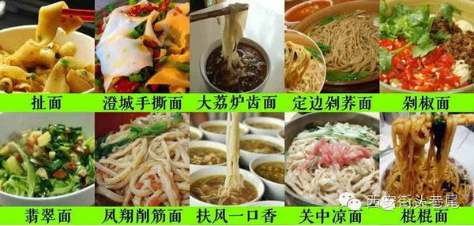
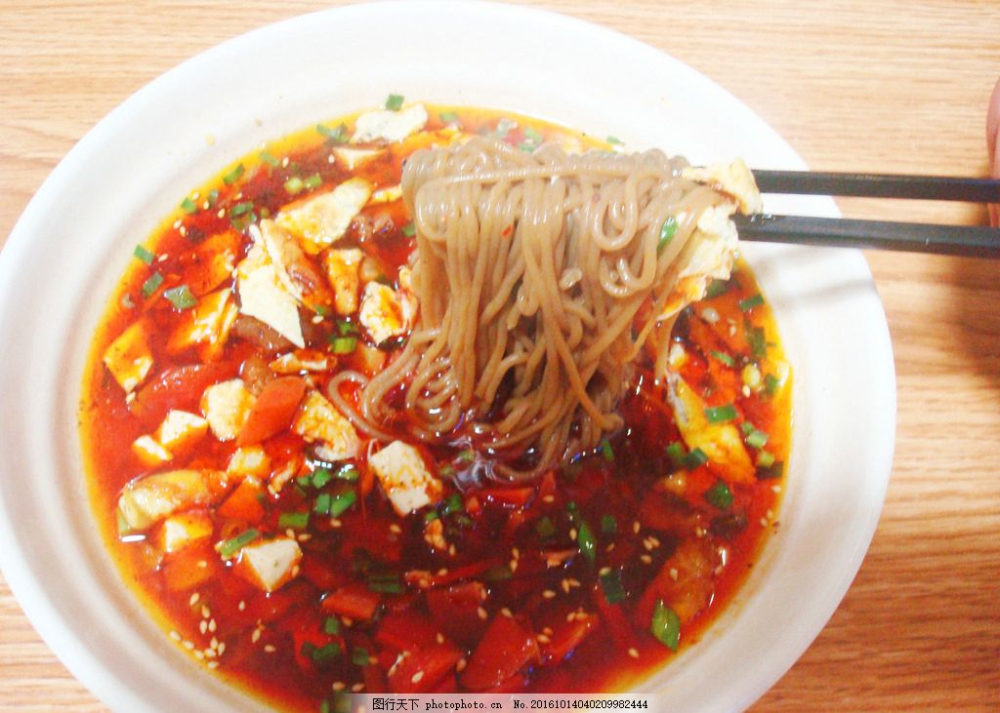
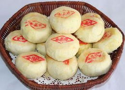
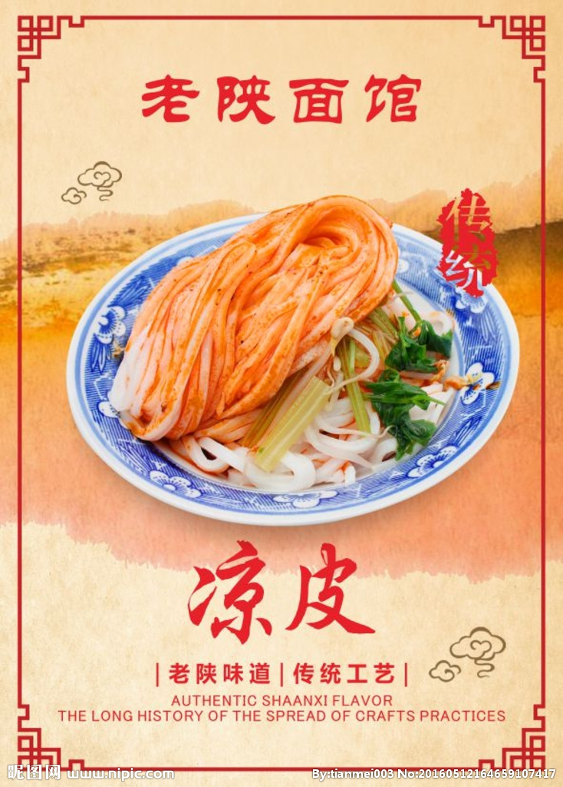
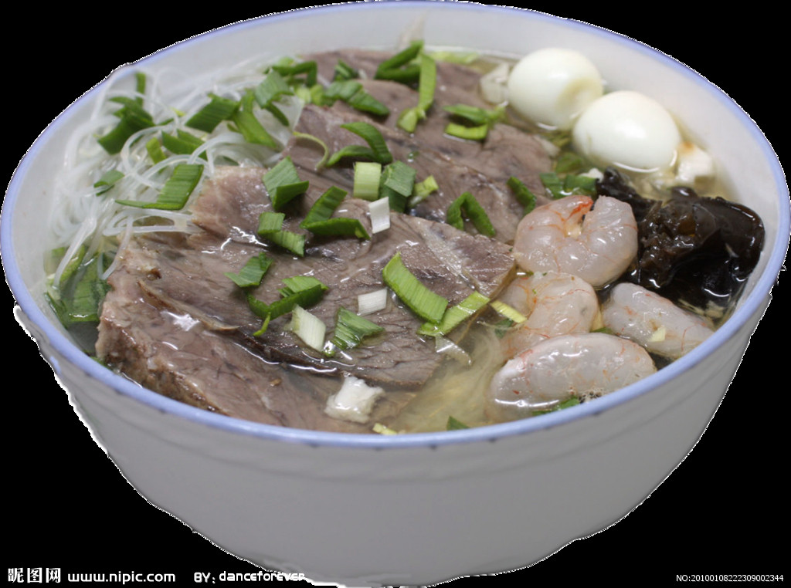

由于政治、经济、文化的有利条件， 陕西美食博采各地之精华， 兼收民族饮食之风味，
挖掘、继承历代宫廷小吃之技艺， 因而以其品种繁多、风味各异而著称。
陕西向来都是以面条为主的一个省区,
做出的面条，种类也是非常丰富的，
虽然说现在陕西的面条的种类已经传遍了中国的大江南北,
但实话讲，那还是本地的最正宗的。

好想吃 好想吃 好想吃 我好想吃啊。笑哭
身为一个岐山人，第一个介绍的当然是岐山臊子面啦， 没错，我的家乡就是臊子面的原厂地，历史最悠久+味道最正宗。 很多美食都有传说 ，臊子面也不例外。你们想知道吗？想知道的话去百度吧，懒得打字。
臊子面是陕西的风味小吃， 品种多达数十种， 以薄、筋、光、汪、酸、辣、香等特色， 吃口柔韧滑爽，其中以岐山臊子面享誉最盛。 臊子面的特点是面条细长， 厚薄均匀，臊子鲜香，面汤油光红润，味鲜香浑厚而不腻 。而岐山臊子面乡土风味尤为浓厚， 以酸辣著称。岐山面要求宽汤，即汤多面少， 并突出酸辣味。所谓煎、汪即面条要热得烫嘴、油要多， 才能体现此面的特色。 岐山面是一种高碳水化合物、高饱和脂肪酸的地方特色面食。 臊子面对关中地区的人们生活的影响很大，无论喜事丧事、逢年过节、老人过寿、 还是小孩满月或是家里来了亲朋都离不开臊子面。关中地区办红白事、老人过寿、 孩子满月等 都一般招待两顿，所谓早饭和午飨，而早饭臊子面即为主食。
关中农村地区，新年第一天的早晨基本上都是臊子面。 吃饭前、仓神、灶神等，后才家人享用。 有的也在先人像前献上一碗臊子面以示怀念。 岐山的臊子面历史悠久，起源于商周，清代已经很驰名。 岐山大小饭店都供应臊子面， 或者干脆就起个 “岐山臊子面馆”“臊子面馆"等只卖臊子面。而其生意往往不错。

表示没有水晶饼的中秋节不是一个完整的中秋节
驰名中外的“德懋恭水晶饼”是陕西地区汉族美食之一， 水晶饼小巧玲珑，皮酥馅足， 滋润适口，层次分明，油多吃而不腻，糖重入口渗甜， 且以其浓郁的玫瑰和橘饼清香使人见即想食。 水晶饼面色金黄，四周雪白， 素有“金底银帮鼓鼓腔，红色印章盖中央”的赞誉，被称为“秦点之首”。
水晶饼源于宋代下邽（1978年下邽更名为下吉）。 当时在关中一带声誉很高，曾与燕窝、 银耳、金华火腿齐名。
元代已远销京、津各大城市 至清代末年，经渭南同义栈张采风技师改进精制， 产品以“金面银帮，起皮飞酥，凉舌渗齿，清香爽口”而名声大振 。当时，以 桐木盒和硬纸盒精心包装，作为馈赠亲友的上等礼品。 清光绪年末年八国联军攻陷北京，慈禧太后避难到西安，曾在广济街口闻香停车， 品尝了德懋恭生产的水晶饼并大加赞赏，逐将其钦点为“贡品”， 这之后德懋恭更是锦上添花，名价倍增。
130年来，德懋恭人依据“德、懋、恭”三个字的语意去做人、 经商，使德懋恭的名气越来越大，德懋恭水晶饼信誉越来越高。 因此水晶饼以西安德懋恭生产的最为正宗有名。
想吃却吃不到的感觉真的太难受了。。。
陕西凉皮为汉族特色小吃之一，凉皮分为米面皮和面皮两大类 ，米面皮实为米皮。是一种凉拌着吃、口感绝佳的西北面食小吃。其种类繁多，制作方法各异， 调拌也各具特色，口味不同。主要有：麻酱凉皮、秦镇凉皮、汉中凉皮、岐山擀面皮、面筋凉皮等。 凉皮历史久远，凉皮传说源于秦始皇时期，距今已有两千多年历史，相传有一年陕西户县秦镇一带大旱 ，稻谷枯萎，百姓无法向朝廷纳供大米，有个叫李十二的用大米碾成面粉，蒸出面皮，献给秦始皇， 秦始皇吃后大喜，命每天制作食用，形成了久负盛名的传统小吃。
凉皮品种多样，虽然都叫凉皮，但做法上差异很大， 每一种有每一种的特点，每一种也有每一种的特色。因原料不同可分为：面皮、米皮、黑米皮、魔芋皮、醋粉皮等多种。 因制作方法不同又分为蒸面皮、擀面皮、烙面皮等。凉皮吃法多样，可凉拌、可热调、 还可如炒面般炒着吃，但主要还是凉拌着吃。 凉皮初时属夏令食品，但现在已经变为四季咸宜
下面我要隆重介绍一下我们岐山的擀面皮
岐山擀面皮，又名“御京粉”，用小麦精粉做成，筋韧耐嚼，香辣适口。 相传在清代康熙年间，岐山县八亩沟的王同江在北京皇宫御膳房当御厨，创出了一种凉皮面食， 进入御膳，取名“御京粉”。康熙末年，王同江告老还乡，把这种宫廷食品传入岐山民间，距今已有近300年。 现如今，歧山擀面皮中最有名的就是出自八亩沟的擀面皮。在西安有多家“八亩沟”的连锁店。
岐山擀面皮的工艺相对来说比较复杂，其调料极为讲究。盐要化成盐水， 醋要用当地农家自制的大曲陈酿的头茬醋，辣椒则采用陕西优质的秦椒， 加工辣椒时要先用“筛箩”过一遍，再用熟油炝一遍，然后加上五香粉、芝麻等20多种佐料， 这样加工出的辣椒鲜红但不干辣，透出扑鼻的辣椒香味。调味采用小铁锅， 将面皮和调料放入边翻边拌，最后倒入盘中，这时你看那面皮，红亮亮、油汪汪， 再尝一口，酸溜溜、香喷喷，让人直接的感受到“白、薄、光、软、筋、香”的美味。 岐山擀面皮既可当佐餐下酒的小菜，又是四季皆宜的小吃，亦菜亦饭，实实是难得的人间美味。

羊肉泡馍简称羊肉泡、煮馍，制作原料主要有羊肉、葱末、粉丝、糖蒜等， 古称"羊羹"，陕西美馔，尤以西安最享牛羊肉泡馍盛名，它烹制精细，料重味醇， 肉烂汤浓，肥而不腻，营养丰富，香气四溢，诱人食欲，食后回味无穷。
北宋著名诗人苏轼留有"陇馔有熊腊，秦烹唯羊羹"的诗句。 因它暖胃耐饥，素为陕西人民所喜爱，外宾来陕也争先品尝，以饱口福。 牛羊肉泡馍已成为陕西名食的“总代表”。
泡馍是土生土长的西安吃食，相传宋太祖赵匡胤落魄时， 流落长安，正值寒冬，饥渴难耐，囊中只有一饼，饼冷口干，难以下咽，街边一家卖羊肉汤的老板， 见之不忍，给了他一碗热气腾腾的羊肉汤。赵匡胤将饼掰碎泡入，吃完顿觉神清气爽，豪气冲天， 一扫颓废心情，踏上征程。登基以后，尝遍世间美味，心中独独放不下记忆中的羊肉汤泡饼，传令厨房仿制， 近百厨师苦思冥想，才定下做法，就是现今的羊肉泡馍。据说赵匡胤吃后龙颜大悦，成为每天定点菜品， 厨师长封了万户侯，估计是世界上首位因为推动饮食文化发展而封侯的人， 可惜没法考证，要不然中国就又多了一个世界最早推动饮食文化发展的人。
牛羊肉泡馍不仅讲究烹调，更讲究“会吃”。没有经验的人，吃前总习惯刁： 用筷子来回搅动，这是一忌。“老陕”的吃法是，从一边一点一点“蚕食”，这样能始终吃出鲜味。 吃时，还可根据自己的口味嗜好，调入糖蒜，或香菜、辣子酱、芝麻油之类佐料。 吃后饮“高汤”(即原汁汤加粉丝烩制而成)一碗，异香满口，顿觉神清气爽，精神倍增。
知道大半晚上看这些的感觉吗???